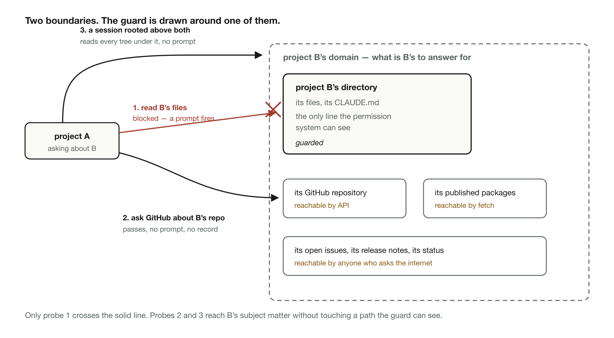
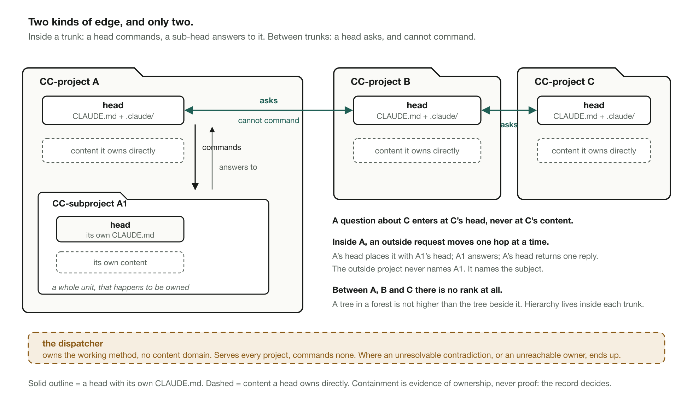
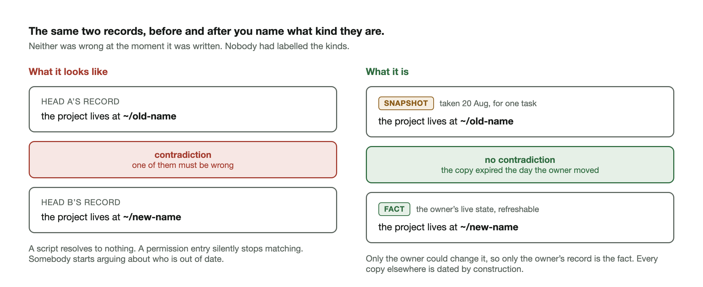
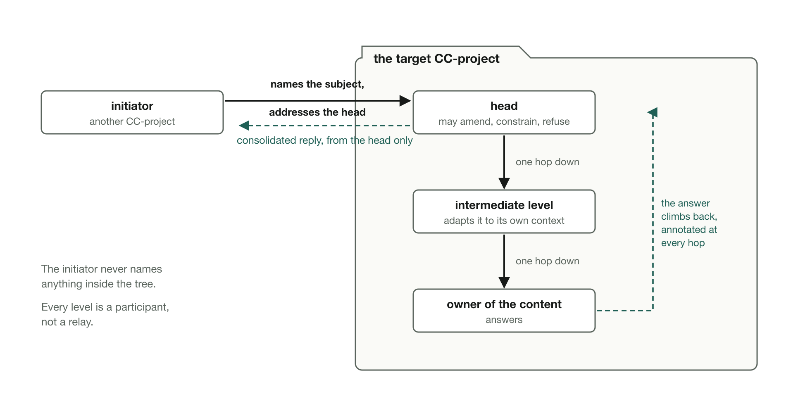
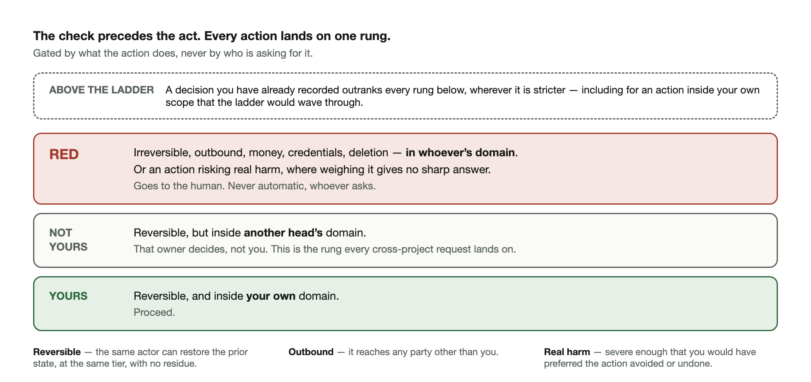

Once several agent projects with real capability share one machine, the expensive failures are not deleted files. They are an agent confidently answering a question that was never its to answer, a stale copy of someone else's state quoted back as a fact, and an action that slips through because the permission model guards paths and has no concept of subject matter. One of my projects ran gh pr list against a repository squarely owned by a different project of mine, and nothing stopped it: the directory was blocked, the API call was not, and the same information walked in through the second door. The boundary that matters is drawn around subjects, and no configuration draws it, so it has to be held by rules the agents follow. That makes the rule set the engineered artifact, something you design, test, and find bugs in. What follows is that rule set: six laws, the edges they run on, and the path a single request takes from one project to another and back.

The unit here is the project, not the agent. Multi-agent hierarchy is solved territory: an orchestrator spawns sub-agents, which spawn workers, all inside one project, one context, one owner. Nothing here competes with that. What has no shape by default is communication between projects, each sovereign, each a hierarchy inside, none ranked against another outside. A tree in a forest is not higher than the tree beside it. Hierarchy exists only inside each trunk. Between trunks there is law.
Membership is a concrete test. A directory is a project exactly when it carries its own CLAUDE.md, the charter that gives it a head: the one owner that answers for everything under it. Inside, it may hold subprojects, each a full unit by the same test with a head of its own, plus content the head owns directly. A subsidiary is a whole company, not a department, and the test chains down.
That yields two kinds of edge and only two. Inside a trunk, head to sub-head: commands down, answers owed up. Between trunks, head to head: asks across, and no power to command.
Containment is how ownership becomes visible, and it is evidence, never proof: a file can sit inside one tree and belong to another's domain, and a scheduled job belongs to the domain it serves, not the directory holding it. Where the layout and the record disagree, the record decides. Where the record is marked contested, it stays contested until someone with the authority rules, because a project that quietly settles its own contested entry has decided a dispute in its own favour.
One entity sits above the trees. A dispatcher owns the working method and no content domain, serving every project and commanding none of them. What terminates there are the gaps that surface between projects: a contradiction between owners that will not dissolve, an owner nobody can reach, a remit nobody has recorded. If you run three projects you hold that role yourself, and its questions land on your desk beside the ones that were always yours.

Each law covers one dimension and only one, so any of them can be read, applied, or amended without disturbing the other five. Together they run as one mechanism, and the walk-through after them shows it running: the registry of the first law tells you whose a subject is, the second stamps what comes back with what kind of thing it is, the third carries the request and the answer, the fourth says what the request may not carry, the fifth gates what it may cause, and the sixth keeps two such paths honest with each other.
Every domain has one owner: a head. Ownership is three inseparable things, and separating them is what breaks it: the authority to rule on the domain, the responsibility for its records, and the capability to refresh them. Capability exercised through a human's gated hands, a login or a click somebody has to perform, still counts; it is mediated, not missing. Where a leg is genuinely absent, the ownership itself is broken, and that is the thing to fix, never the symptom. An owner who cannot refresh a class of fact says so and stops, because a caveat is not a substitute for an answer.
The mechanism is a shared registry, the object FIPA calls a Directory Facilitator and itself describes as a yellow pages service. Read it before any cross-project work. Keep your own row true. Never write another head's row. Two heads whose subjects touch must recognise each other in both directions. Entries carry the mark of who wrote them: an entry written by the head it describes is authoritative, and an entry written about a head by anyone else is usable but not authoritative.
The failure this removes is the confident wrong answer. Nobody touches, verifies, or rules on a domain that is not theirs. They ask.
Every record is one of five kinds, and naming the kind is part of writing it. A fact is true about the world and refreshable from a source. A positioning choice is a deliberate presentation, set only by whoever owns the presentation, and it may differ from the underlying fact without contradicting it. A ruling is a decision, and it exists only once written into the file that governs the behaviour it changes, dated and sourced. A snapshot is a dated copy taken for one task, expiring with it, never authority. A draft is what was true when written: an archive, not a queue.
Most apparent contradictions between agents dissolve the moment you check the kinds. One project renamed its own directory, a fact only its owner could change, and other projects' records went on asserting the old path: a script resolved to nothing, and a permission entry silently stopped matching, surfacing as unexplained prompts nobody could trace. For days two projects' records flatly contradicted each other about where a third one lived, and neither was wrong when it was written. The stale entries were snapshots being read as facts, and classifying them evaporates the contradiction: the owner's live state is the fact, and every copy elsewhere expired the day the owner moved.

The operational form is worth adopting on its own. Hold a pointer, not a copy. For any fact another head owns that can change, store the address and ask when you need it. Going stale is the small problem; being quoted back at its owner as their own record is the large one. When you must copy, stamp it with date and source and let it expire with the task.
Two consequences carry weight. A ruling agreed in conversation, or written into a report, has not been made: a fix that has not landed in its single home has not happened, because the next session reads the governing file and not the conversation. If someone challenges a record of yours and you reclassify it as a different kind, you have resolved the dispute in your own favour, and that move is the defect, not a defence. For a genuine contradiction between owners, including a dispute about a record's kind, there is one procedure: tell the peer first, record both readings openly, and let neither side act until it is ruled.
You reach a domain only through its owner. A request enters a tree at its head, then moves one hop at a time to the next node that owns the subject, until it reaches the node that owns the content directly. Every node on that path is a participant, free to amend the request, answer it, or refuse it, and never a relay. The answer climbs back up the same path, hop by hop, annotated at each one. Skipping the middle costs: a node holding two commitments, each visible to only one of its children, is the only one positioned to notice that they conflict.

The useful consequence is that you never need to know another tree's internal structure: name the subject, address the head, and let the chain place it. If you find yourself naming a sub-subproject, you are modelling someone else's internals and you have already left the protocol.
Every request declares which of three kinds it is. A ruling request asks whether something is true, whose it is, or what the owner decides. An evidence request asks for material, and the holder decides what leaves its scope. A capability request says that you operate a tool I need, and it is tiered by what the tool does, never by who is asking. Keep one session per coherent request, with a direct test: would the answer to one change the answer to the other? If yes, one session; if no, two.
Two limits close the law. An owner nobody can reach is a gap: log it for the dispatcher and stop, because self-service is not a fallback, and urgency that cannot wait goes to the human. And constraints bind scope, not tools: tell a head what it may not touch, and never put it in a position where it cannot refresh its own facts and then ask it about those facts.
A request carries the requester's need, never its permission. This is the confused deputy, arriving as a polite message from a peer, and the law exists to make the deputy check the authority instead of inheriting it.
Laundering is the circumvention of a refusal, actual or reasonably anticipated. If something denied you and you route the same action through a peer that did not deny it, that is laundering. If you never asked because you expected the denial and went straight to the peer, that is also laundering. Either way it goes to the human, however large the efficiency argument.
Providing a capability you legitimately own to a peer who was never refused is service, and service is exceptional, not routine. It is gated by consequence like any other action, which is the next law. Service and laundering look identical from outside, so the test is behavioural: if you can't tell which one you're in, you're in the second. Ask. Its complement is the harder half in practice: a deliverable's substance is produced inside the domain answerable for it. A peer supplies evidence and capability, never your work.
The check precedes the act, always, because a ruling that arrives after delivery is damage control.

Reversible and inside your own domain: proceed. Reversible but inside another head's domain: its owner decides, not you. Irreversible, outbound, money, credentials, deletion, in whoever's domain: it goes to the human and never happens automatically. And where an intervention risks real harm and weighing it rationally gives no sharp answer, the question goes to the human too. The gates stack into a ladder, and one rule sits above all of its rungs: a recorded ruling outranks the ladder wherever it is stricter, so a standing decision binds you even for an action inside your own scope that the ladder would wave through.
Three of those words need operational tests, or they are decoration. Reversible means the same actor can restore the prior state, at the same rung, with no residue. Outbound means it reaches any party other than the human the system serves. Real harm means severe enough that the human would have preferred the action avoided or undone. Write the tests next to the gates, because the gate is only as good as the predicate under it.
Two lanes serving one goal are not independent, however unrelated their subjects look. They are alternative routes to one outcome, and each has to know the other's live state in both directions, because neither can price its own urgency alone: progress on one route changes what the other should be spending. The law is therefore procedural. Say so explicitly the moment you discover a convergence, and keep the state flowing after that, in both directions.
Detecting a convergence is the hard part, since two projects with different subjects, owners and vocabularies have no natural moment at which either notices. It is the law exercised least, and the one most likely to be discovered late.
Project A needs a fact that project B owns.
A reads the shared registry and learns the subject is B's. A composes the request and types it: this is evidence. The request is a message into a session opened inside B, carrying nothing but the typed request. It addresses B's head, not the node A suspects holds the file, and it names the subject in A's own terms without referring to anything inside B. B's head reads the subject, decides the request is B's to answer, and places it one hop down to the node whose remit covers it. That node either answers or passes it down again, until the request reaches the owner of the content, who decides what leaves its scope and answers with that alone. On the way back up, the intermediate node adds the thing only it can see, that the answer is bounded by a commitment its sibling made last week. B's head consolidates and replies once. A records the reply as a snapshot, stamped with source and date, holds the pointer to B rather than the copy, and asks again the next time it needs the fact fresh.
Now the variant where A wants B to do something. A sends a capability request naming the tool's effect, not B's internals, and B applies the gates. Reversible and inside B's domain: B's owner decides, and A gets an answer either way. Irreversible, outbound, or touching money, credentials or deletion: it stops at B and goes to the human, and A's urgency does not change that. What A may never do is take a refusal from B and send the same action to project C because C has the same tool and no history of saying no. That is the circumvention of a refusal, and A's move is to record the refusal in its own records and stop.
Finally the variant where A and B contradict each other. Check the kinds first, because most of these are a snapshot or a positioning choice being read as a fact, and they dissolve without a ruling. If the contradiction survives that check, or the dispute is about which kind a record is, neither side resolves it: A tells B, both readings are recorded openly with their authors, neither side acts, and the question goes to the dispatcher, where holding it open is the correct state until someone with the authority rules.
This is a set of files and behaviours, not an enforcement layer. Nothing in it intercepts a call, so the honest claim is narrow: only behaviour enforces this, and the files exist to make correct behaviour cheap to look up. Renumbering a live standard also has a price, because every note that cites a bare number then cites nothing, so write the concordance mapping old numbers onto laws before you delete the old numbering.
Three limits stand today. The mechanics move questions and answers between heads reliably and have not yet carried a full cross-tree modification from request to landed change. Convergence has been asserted between two lanes and not confirmed in both directions. And the laws are new, checked on paper and not yet by months of use. What broke in the tooling is a separate field-notes piece, because a protocol write-up with no failures in it is a design document in field-report clothing.
Rules a system runs on are code, and "it reads better now" is not a test. You wrote the sentences, which makes you the worst judge of whether a stranger can follow them. Run three checks, each catching what the others miss.
Blind adjudication. Take a dozen decisions your projects have already made and strip every trace of how they came out. Hand them, with the rule text and no history of your system, to two or three agents that have never seen it, and let each rule alone. Compare their verdicts with yours. A divergence is either a genuine disagreement about what the rule should say or a sentence that reads two ways, and you want both before the rules go live.
An inventory of undefined predicates. Make a pass that does nothing but list every term the rules lean on without defining, then attach an operational test to each or delete it. Gates fail quietly on undefined predicates, because everyone applying one is sure they know what the word means.
An adversarial read. Set an agent on the draft with no brief except to break it, and watch for a tidier definition that decides an open question while claiming only to reorganise. A clean-up pass produces that failure more often than any other.
One caution about the bar. The completeness criterion is not that every situation has a precomputed answer, which no rule set achieves. It is that no situation lacks a lawful next move: following the rules always produces something you may do, even when that is to hold the question open, tell the other side you are holding it, and act on neither reading until someone rules. Holding a question open is a lawful move. Quietly resolving it is the defect.
| What I called it | The established term | Source |
|---|---|---|
| A tree: one head plus everything under it | Bounded context, holon | Evans, Domain-Driven Design, 2003; Koestler |
| The forest of independent trees interacting as peers | holarchy, federated architecture | Koestler; distributed systems usage |
| The shared roster of who owns what | Directory Facilitator, a yellow pages service; also a context map | FIPA Agent Management Specification; Evans |
| The dispatcher | Platform team | Skelton and Pais, Team Topologies, 2019 |
| Never modify another tree's content; ask and accept | Anticorruption layer | Evans |
| A request never carries the requester's authority | The confused deputy problem | Hardy, ACM SIGOPS, 1988 |
Almost all of this has a published name already: bounded contexts and anticorruption layers in domain-driven design, holons and holarchies in the holonic multi-agent literature, the Directory Facilitator in FIPA's agent-management specification, the platform team in Team Topologies, and the confused deputy in Hardy's four-page note, while Koestler describes hierarchies as vertically arborizing structures whose branches interlock with other hierarchies to form horizontal networks, which is the forest, half a century early. Agent communication languages typed requests by act long before this, with KQML's ask-if and FIPA's query-if and request, entering at the head is Evans' aggregate root, and gating by reversibility is Amazon's one-way and two-way doors.
Two pieces are in no source I reached: the intermediate node as an active participant, free to amend a request in transit instead of relaying it faithfully, where the closest specified behaviour requires the opposite; and marking a registry entry by who wrote it, so that an entry written about a head is usable but not authoritative, where FIPA's registry disclaims responsibility for the accuracy of what is registered and restricts nobody from registering anything.
If you run one agent, none of this applies. If you run several with real capability over shared resources, four things do.
Only behaviour enforces domain ownership. No configuration makes the mechanical guard and the ownership boundary coincide. Never mistake "it didn't prompt me" for "it was mine to do."
Ask, don't verify. When another head owns a fact, ask for a per-claim verdict of confirmed, wrong, or not stated, and close with "what did I get backwards?"
Hold a pointer, not a copy. Store the address of anything that can change, and stamp any copy you do take with its date and its source.
Test your rules the way you'd test code. Blind adjudication is an afternoon, and it is the only way to find out whether a stranger reads your rules the way you meant them.
The literature for this is not in the agent-protocol space: it is in domain-driven design, in Team Topologies, in Koestler on self-regulating hierarchic order, and in a 1988 note about a compiler tricked into writing to a file it should not have touched, so read those before you write your eleventh clause.
FIPA's specifications are worth reading for the Directory Facilitator definition, but the live fipa.org domain no longer serves them; use the Internet Archive copies.